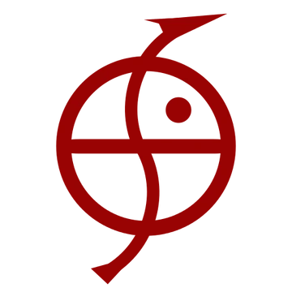
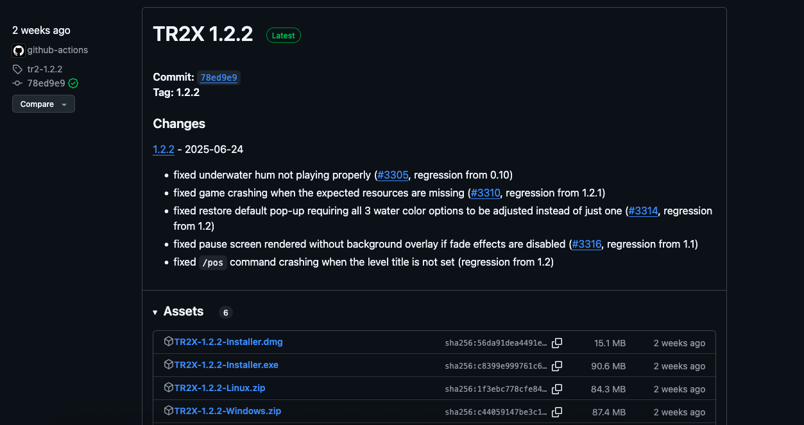
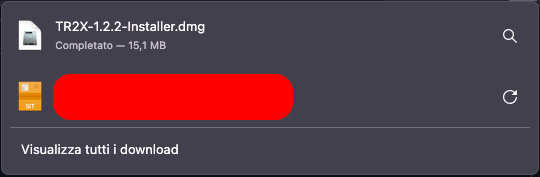
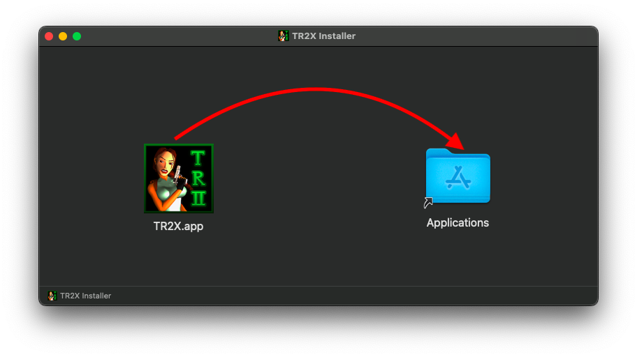
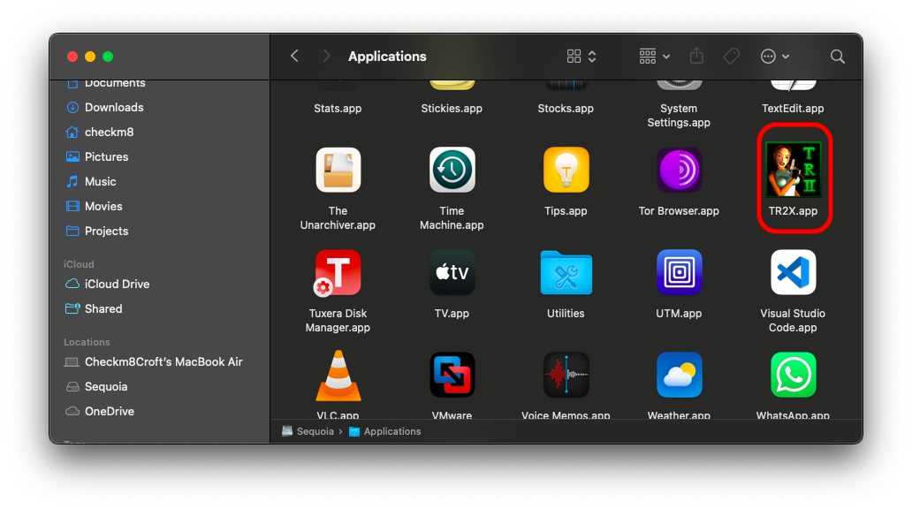
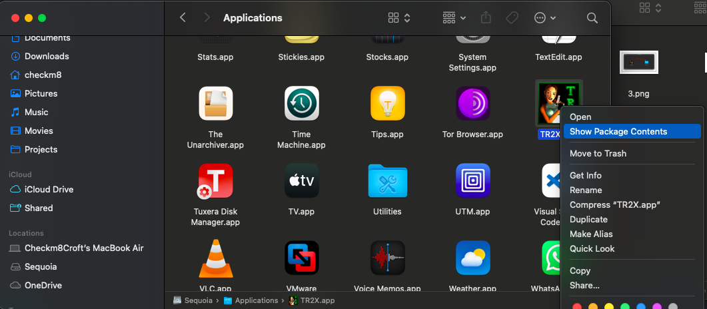
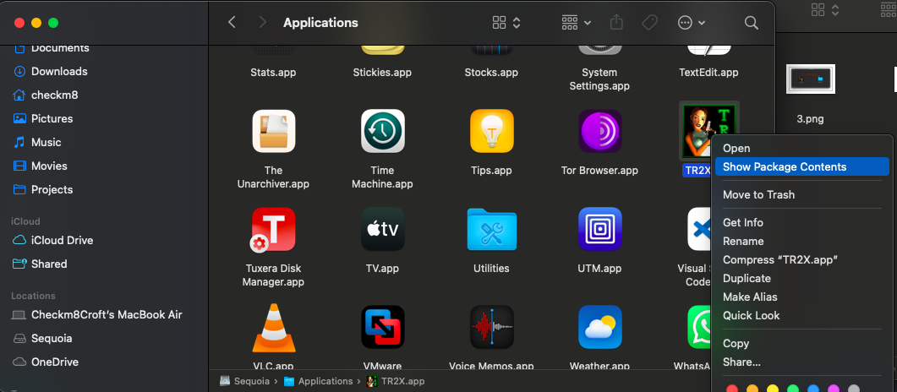
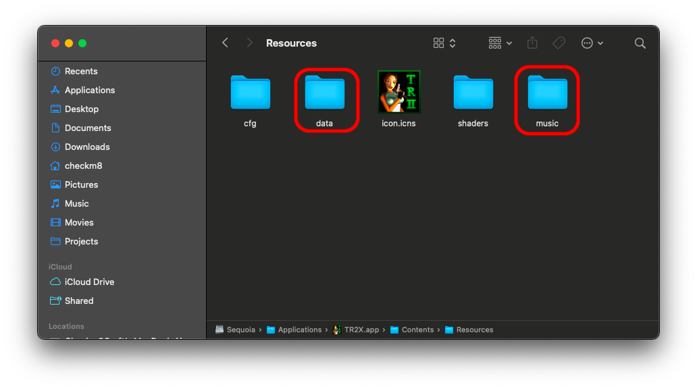

TR2X is an open source implementation of original TR2 engine
It has a lot of features, improvements and is cross platform, so you can play it also on macOS and Linux
 See here official repo
See here official repo
To install it, you can run my install tr2x.py script, othewise, go to the repo, to releases and download latest TR2X DMG
 
Mount the DMG and drag TR2X app in Applications
You should see TR2X on the Applications folder
Now right click on TR2X and click Show package contents
 

Now you have to copy original game files into TR2X, so from a STEAM/GOG/PC copy, copy the data folder into Applications/TR2X.app/Contents/Resources/
Now you have to download music tracks (in English) and (if you want) the Unfinished Business expansion
Download MusicExtract the downloaded music tracks and copy them into Applications/TR2X.app/Contents/Resources/music
If you decided also to download the GM version, you have just to extract the files from the zip and copy extracted files into data folder